5 What’s in the way?
Once you’ve got the message clear in your plot, there can still be some clutter in the graphic.
To structure how to clean up your plot, we will talk about
- Decoration
- density, and
- summary
Overview
Duration 49 minutes
Questions
- How much of this plot is not data?
- What do I do when there are too many points to see anything?
- What is my summary hiding?
What you need this session
- A session of RStudio open
- Something to draw on, and something to draw with
- The following packages installed
5.1 Decoration
The idea: there is “ink” in every plot - the idea is we want to only keep the ink that is related to the data. This is sometimes referred to as the data:ink ratio
Here is where we left off in Chapter 4.

There are two lines per facet - these are representing the data. Not all of the ink on the plot is related to data. Edward Tufte called the useful fraction the data-ink ratio. Go through each piece and ask: is this helping, or is it just…here?
You could argue that some of these parts of ink that are not data are:
- the grey panel background
- the white gridlines, major and minor
- the box around the legend
- the legend title, which is a column name
Let’s walk through some ways to improve the data:ink ratio

Each step removed something, but the message was kept. We got some more real estate back for the plots too, by moving the legend.
Colour is ink
Colour counts as ink, and it is sometimes where people double up
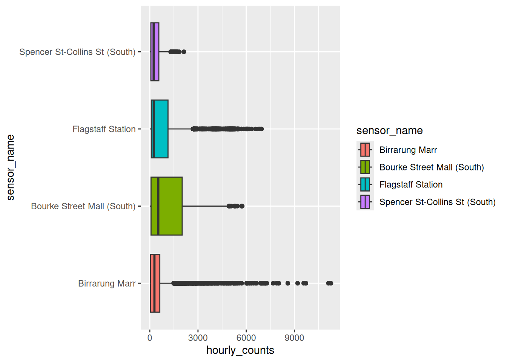
The x axis already says which sensor is which. The fill says it again, and then a legend says it a third time.
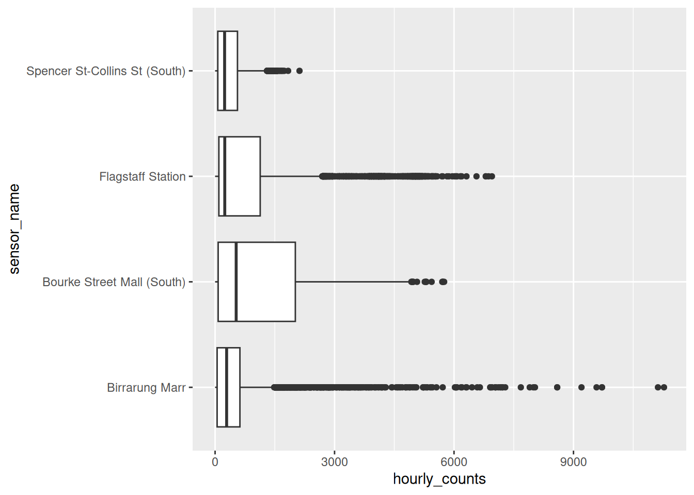
We have the same message, but with less ink, and the plot got wider because there isn’t a legend.
We want to use colour carefully - if the position (x or y axis) is already carrying that information, we probably don’t need it. Even if it looks nice!
We can push this to the limit, and you might end up with something a bit more abstract: no gridlines, no axis, no legend.
Gridlines are not data, but they are how a reader gets a number off an axis.
If you delete them, you can make the plot cleaner, but less useful.
So remember, the question is not so much: “how much can I remove”, but “what is this piece for” - if you say what each piece is for, that usually means you can keep it.
library(tidyverse)
library(naniar)
library(gghighlight)
library(ggridges)
library(ggrain)
pedestrian_hourly <- pedestrian |>
mutate(day_type = if_else(
condition = str_starts(week_day, "S"),
true = "weekend",
false = "weekday"
)
) |>
group_by(sensor_name, day_type, hour) |>
summarise(
mean_count = mean(hourly_counts, na.rm = TRUE),
.groups = "drop"
)
p_busy <- ggplot(pedestrian_hourly,
aes(x = hour,
y = mean_count,
colour = day_type)) +
geom_line() +
facet_wrap(vars(sensor_name))
p_busyRun
p_busy + theme_void(). What did you lose, and would you ever want that?Try each of these and pick one you’d keep:
Only open this if you’ve actually had a go.
1. theme_void() removes the axes too, so you can no longer read a value off the plot. Useful for maps, and for sparklines where the shape is the whole message. Rarely anything else.
“Decoration” Take aways
- Removing non-data ink is cheap, it usually helps
- Colour is ink. Soemtimes the message doesn’t change if you drop it.
- Data-ink is a direction, not a score. Gridlines usually have a job
5.2 Density
The idea: if there are more points than pixels, the plot can lose its interpretation and become more of a blob.
Everything above was 192 summarised rows. Here is the raw data, all 37,700.
# A tibble: 37,700 × 9
hourly_counts date_time year month month_day week_day hour
<int> <dttm> <int> <ord> <int> <ord> <int>
1 883 2016-01-01 00:00:00 2016 January 1 Friday 0
2 597 2016-01-01 01:00:00 2016 January 1 Friday 1
3 294 2016-01-01 02:00:00 2016 January 1 Friday 2
4 183 2016-01-01 03:00:00 2016 January 1 Friday 3
5 118 2016-01-01 04:00:00 2016 January 1 Friday 4
6 68 2016-01-01 05:00:00 2016 January 1 Friday 5
7 47 2016-01-01 06:00:00 2016 January 1 Friday 6
8 52 2016-01-01 07:00:00 2016 January 1 Friday 7
9 120 2016-01-01 08:00:00 2016 January 1 Friday 8
10 333 2016-01-01 09:00:00 2016 January 1 Friday 9
# ℹ 37,690 more rows
# ℹ 2 more variables: sensor_id <int>, sensor_name <chr>And a plot of this
It’s hard to say how many points there are, since they are overlapping.
When I encounter this, I usually use one of the these three steps:
alpha- transparency: overlapping points get darkergeom_jitter()- spread points sharing an x/y value- a geom that summarises, once there are too many for either to help
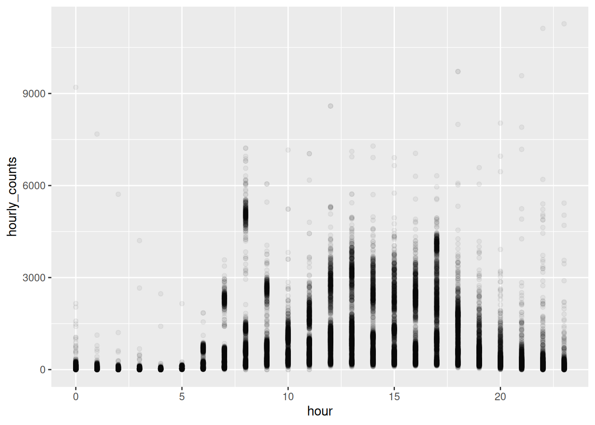
hour is a whole number, so every point in a column sits at the same x and we are still stacking them. geom_jitter() spreads them sideways - you can control how much sideways with width:
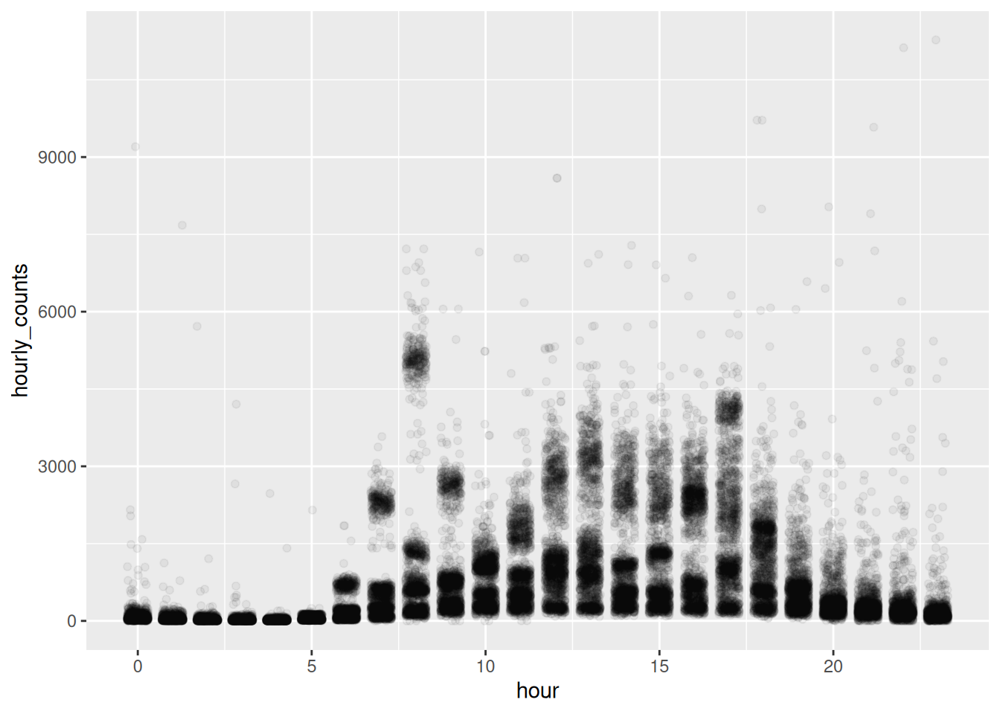
Even jittered, you are still asking the reader to judge density by eye. Put a summary on top, like a box plot (made transparent!), and it makes it a bit easier.
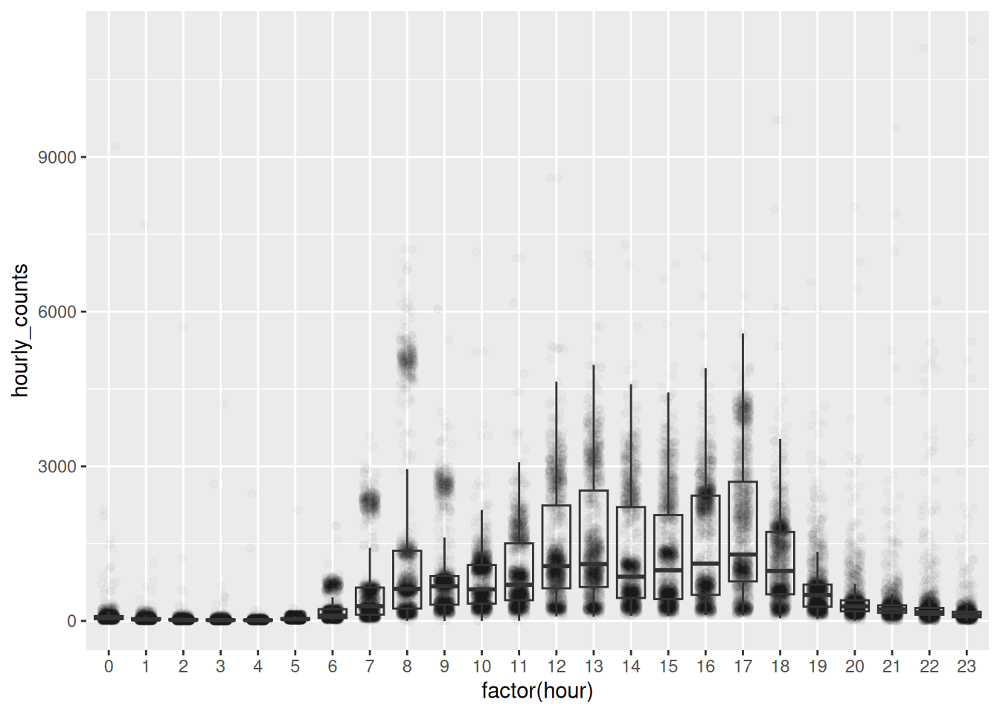
The boxplot gives the eye something to anchor on, and the points behind it show whether the box deserves to be believed.
When there really are too many points for jitter and alpha, hand the problem to a geom that counts. geom_hex() bins in two dimensions and colours each bin by how many landed in it. It’s Chapter 3’s binning with one more axis.
Density becomes something you read off a legend rather than guess from how black the page looks. geom_bin2d() does the same with squares.
Same trade as geom_rug() in Chapter 3: a rug worked on 397 points and would be a smear on 35,152.
The other kind of crowding is too many lines rather than too many points. gghighlight(), from the gghighlight package, keeps one and greys the rest.
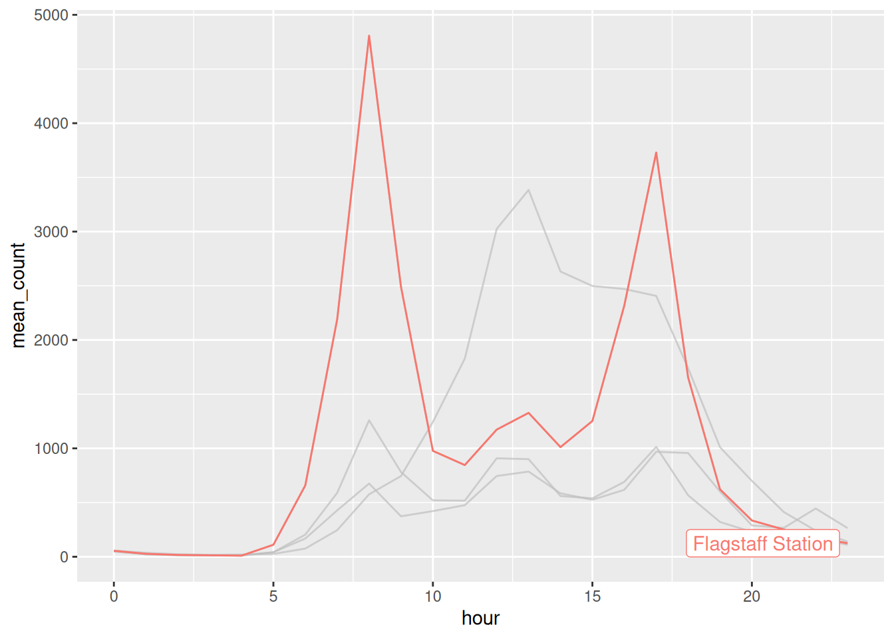
Note the filter(). pedestrian_hourly holds a weekday and a weekend row for every hour, so colouring by sensor alone gives each line two values at every hour and it sawtooths straight away, exactly as in Chapter 2. Either filter to one kind of day, or add linetype = day_type so ggplot2 knows there are eight groups and not four.
There’s more on this in the Summary section below, where it turns out to be the same trick as drawing your whole dataset in grey behind a facet. We come back to it as a design principle in Chapter 6.
Try
alpha = 0.01, thenalpha = 0.3. Which lets you see the shape?Change the jitter width:
Try 0.1, then 0.5. At what point does the jitter start lying to you?
- Take the boxplot off and put it back. Which version would you send to somebody, and which would you use to check your own work?
Only open this if you’ve actually had a go.
1. At 0.01 almost everything vanishes. At 0.3 the busy hours saturate to solid black and you’re back where you started. Around 0.05 works here, and the right number depends on how many points you have.
2. At 0.5 the points from one hour spill into the next, so a reading at 8am appears to sit at 8:30. Around 0.2 is honest here.
3. I’d send the boxplot. I’d check my own work with the points, because that’s where you find out the box is describing a middle nothing is near.
Takeaways
alphafirstgeom_jitter()for ties/overlaps, beware it moves your data- Use a summary over top so readers have something to anchor on
- If more points than pixels, reach for a geom that summarises
5.3 Summary
The idea: a summary shows some shape of your data. But, when the shape is wrong, the summary is confidently wrong.
Let’s show four sensors as boxplots.
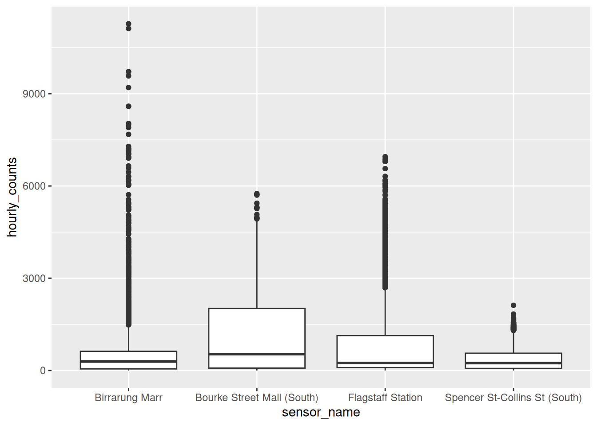
Look at the dots above the whiskers. ggplot2 is calling those outliers:
# A tibble: 4 × 2
# Groups: sensor_name [4]
sensor_name n
<chr> <int>
1 Birrarung Marr 474
2 Bourke Street Mall (South) 15
3 Flagstaff Station 663
4 Spencer St-Collins St (South) 142Flagstaff has over 600 outliers!
We know why from Chapter 3: 8am at Flagstaff is two mornings, not one. A boxplot assumes one lump. When there are two (bimodal!), it describes a middle that nothing is near and flags the real story as anomalous.
Show the data on top of the summary
A violin keeps the shape, using a density. Layering the points on top keeps the evidence.
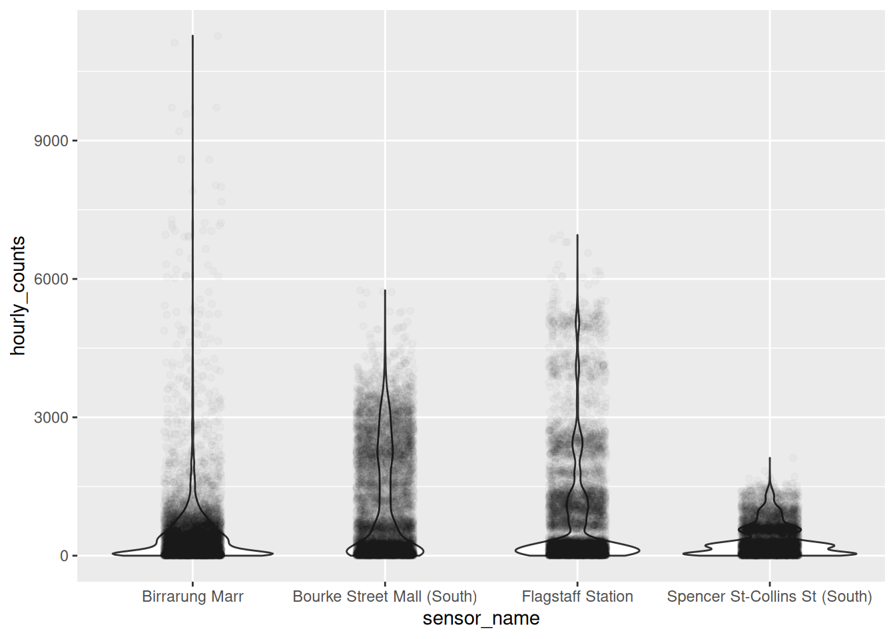
Two layers, and now the summary has its working shown. Flagstaff’s second population is a bulge in the violin and a band of real points.
geom_rain(), from the ggrain package, does all three at once: a boxplot, a half violin, and the points.
Ridgelines
When you have a lot of groups, stack the distributions instead of standing them up side by side. geom_density_ridges() comes from the ggridges package, by Claus Wilke.
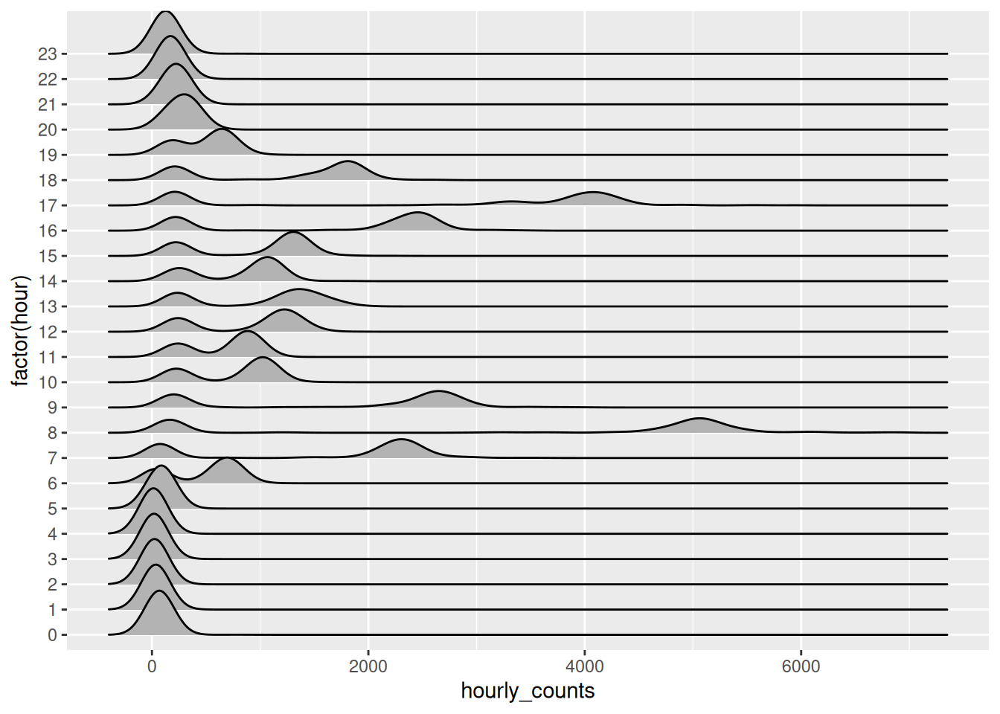
Twenty four distributions, one per hour, and you can read the day down the page. The two-humped hours are visible as two-humped curves.
Try that as twenty four boxplots and you get twenty four squashed boxes.
The classic demonstration that a summary can be confidently wrong is Anscombe’s quartet: four datasets with identical means, variances, correlations and regression lines, and four different pictures.
I worked it through the tidyverse here: Tidyverse Case Study: Anscombe’s quartet.
The punchline is in the base R helpfile’s own comment:
## Now, do what you should have done in the first place: PLOTS
Faceting answers “what does this place look like”. It can’t answer “compared to what”, because each panel only holds its own data.
The fix is to draw everything in grey underneath, then that panel’s own data on top. You can do it by hand, by giving one layer its own data = with the faceting column removed so it appears in every panel:
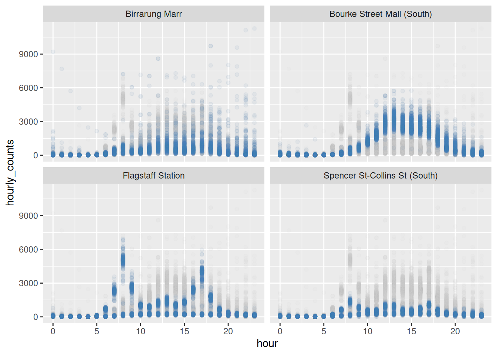
Every panel now shows its own sensor against the shape of all four.
This is the same idea as gghighlight() above, and gghighlight will do the facet version for you. Add a facet and it redraws the whole dataset in grey behind every panel automatically:
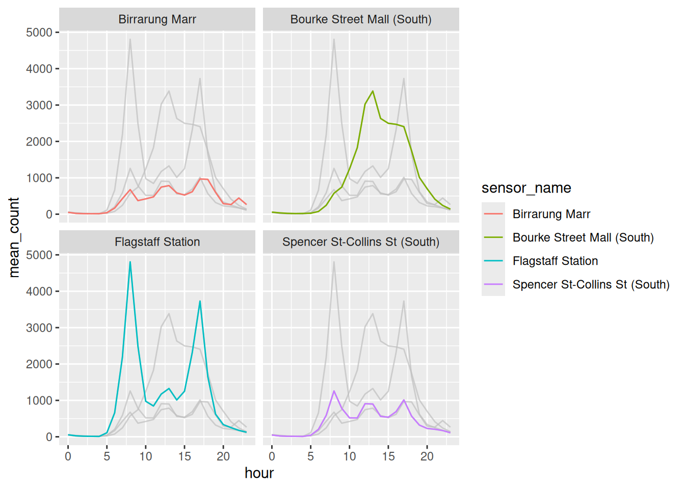
No filter() on a background object, no second data = argument. Note there is no condition inside gghighlight() this time: with a facet, it highlights whatever belongs to each panel.
Grey for context, colour for the thing you mean. It’s the same move whether you write it yourself or let a package do it, and we come back to it as a design principle in Chapter 6.
Sketch a violin of Birrarung Marr, given a park doesn’t care what day it is. Then draw it.
Layer a boxplot inside the violin:
- Make a ridgeline of the four sensors instead of the hours. Which grouping suits ridgelines better?
Only open this if you’ve actually had a go.
1. One lump, low and wide. No commute means no second population, so there’s nothing for the boxplot to hide.
2. width = 0.1. You get the median and quartiles as numbers you can read, sitting inside the shape that tells you whether those numbers mean anything.
3. Hours, because there are 24 of them and they have an order. Ridgelines work when groups are many and sequential. With four unordered sensors, side by side violins are easier to compare.
What to hold onto
- A boxplot claims your data has one middle
- When that’s false it hides the finding and calls it an outlier
- Layer the points over the summary when you can afford the ink
- Ridgelines for many ordered groups, violins for a few
5.4 To summarise
Three things to take out of this chapter.
- Non-data ink is not free, and colour is ink. If dropping it costs nothing, it was decoration.
- Too many points is a geom problem.
alphabuys a little,geom_hex()solves it by counting. - A summary is a claim about shape. Show the data on top of it and the claim has to hold up.
When a plot looks like a mess, don’t start styling it. Ask what is between the reader and the data, and take that out first.
Next up is where the eye goes: not what to take away, but what to make loud.